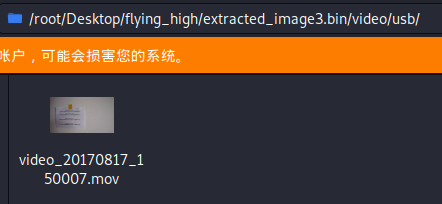

115 Flying_High
题目：我们发现一个坠毁的无人机，你能够恢复这个无人机的信息吗？
下载得到gz压缩包，解压得到无后缀名文件，在Linux下再解压得到image0-3.bin共四个文件。file命令查看类型：
root@kali:~/Desktop/flying_high# file *.bin
image0.bin: UBIfs image, sequence number 1, length 4096, CRC 0x03a905a7
image1.bin: UBIfs image, sequence number 1, length 4096, CRC 0x47b22f13
image2.bin: UBIfs image, sequence number 1, length 4096, CRC 0xf7f7a9b7
image3.bin: UBIfs image, sequence number 1, length 4096, CRC 0x68fa15bd
需要用到UBI Reader。安装后解压四个文件：
root@kali:~/Desktop/flying_high# for i in `ls *.bin`; do ubireader_extract_files $i -o extracted_$i; done
Extracting files to: extracted_image0.bin
Extracting files to: extracted_image1.bin
extract_dents Warn: DEV Fail: unpack requires a string argument of length 8
extract_dents Warn: DEV Fail: unpack requires a string argument of length 8
extract_dents Warn: DEV Fail: unpack requires a string argument of length 8
extract_dents Warn: DEV Fail: unpack requires a string argument of length 8
Extracting files to: extracted_image2.bin
read Error: Block ends at 4299020519 which is greater than file size 16887808
index Fatal: LEB: 31, UBIFS offset: 4053224, error: Bad Read Offset Request
Extracting files to: extracted_image3.bin
在image3.bin中找到可疑信息：
root@kali:~/Desktop/flying_high# ls -la extracted_image3.bin/
总用量 188
drwxr-xr-x 4 root root 4096 9月 23 08:45 .
drwxr-xr-x 6 root root 4096 9月 23 08:45 ..
-rw-r--r-- 1 root root 12 8月 17 2017 accs_infos.bin
-rw-r--r-- 1 root root 5087 1月 1 2000 config.ini
-rw-r--r-- 1 root root 5080 1月 1 2000 config.ini.old
drwxr-xr-x 5 root root 4096 1月 1 2000 custom.configs
-rw-r--r-- 1 root root 5148 8月 17 2017 emergency.bin
-rw-r--r-- 1 root root 124642 9月 21 2015 ephemeris.ee
-rw-r--r-- 1 root root 12 1月 1 2000 fact_accs_infos.bin
-rw-r--r-- 1 root root 20 9月 9 2015 fact_trims.bin
-rw-r--r-- 1 root root 0 1月 1 2000 gps.log
-rw-r--r-- 1 root root 2 1月 1 2000 old_adress.txt
-rw-r--r-- 1 root root 19 1月 1 2000 random_mac.txt
-rw-r--r-- 1 root root 20 9月 17 2015 trims.bin
drwxr-xr-x 4 root root 4096 1月 1 2000 video
其中包含video文件夹，进一步查看，在video/usb/目录下有视频文件。

打开视频找到flag。

flag：HITB{96ac9a0458279711e5d61f10849e6c58}
116 LooL
题目：iVBORw0KGgoAAAANSUhEUgAAABwAAAAUCAIAAAARPMquAAAACXBIWXMAAA7EAAAOxAGVKw4bAAAAB3RJTUUH3goNFiAI385k0QAAAPVJREFUOMuNVEESxCAIC47/Nr6cPahbpUDtCRWTEDMVKNxPAQhEoQJRAE9h6tdSCzpdUPkXaguDOI5UnmUZTT7uEuju7zLNZomaIoh327uhRAKTCRK9Iah7LScwzdWcMbjcgyMSBBoP9JoAmcugQsVIbl52DqUtBm0cuV1yFocrqE4VMa3/9ETfODylnNmVdmVFPhmn0phz9un5zIuZgOaeZobKjikDd5jWo/GHEJ4qEKgYPoFH2nylC+qju104Oz010euxD921WxSUfayaMAu3q4vZxIPLjW7G7/H7Lmc/4mHmqB6/72y7iy23H7wSt7nPxxLVH88jbs4UmdXpAAABlmlUWHRYTUw6Y29tLmFkb2JlLnhtcAAAAAAAPD94cGFja2V0IGJlZ2luPSfvu78nIGlkPSdXNU0wTXBDZWhpSHpyZVN6TlRjemtjOWQnPz4KPHg6eG1wbWV0YSB4bWxuczp4PSdhZG9iZTpuczptZXRhLycgeDp4bXB0az0nSW1hZ2U6OkV4aWZUb29sIDkuNDYnPgo8cmRmOlJERiB4bWxuczpyZGY9J2h0dHA6Ly93d3cudzMub3JnLzE5OTkvMDIvMjItcmRmLXN5bnRheC1ucyMnPgoKIDxyZGY6RGVzY3JpcHRpb24gcmRmOmFib3V0PScnCiAgeG1sbnM6ZGM9J2h0dHA6Ly9wdXJsLm9yZy9kYy9lbGVtZW50cy8xLjEvJz4KICA8ZGM6ZGN0Zj42ZmI1MzI5NWI1MzVlYmRmZmExYWM4ODQzZmM2YWNkZDwvZGM6ZGN0Zj4KIDwvcmRmOkRlc2NyaXB0aW9uPgo8L3JkZjpSREY+CjwveDp4bXBtZXRhPgo8P3hwYWNrZXQgZW5kPSdyJz8+KPPlkwAAAABJRU5ErkJggg==
base64解密，发现PNG文件头。转码得到图片。

十六进制编辑器打开，发现一段以dctf为标签的可疑信息：

对6fb53295b535ebdffa1ac8843fc6acdd进行MD5反查，得到brainloller。这是一个brainfuck的变种，从png图片的像素中提取信息，规则为：
Color | RGB | Function |
red | (255,0,0) | > |
darkred | (128,0,0) | < |
green | (0,255,0) | + |
darkgreen | (0,128,0) | - |
blue | (0,0,255) | . |
darkblue | (0,0,128) | , |
yellow | (255,255,0) | [ |
darkyellow | (128,128,0) | ] |
cyan | (0,255,255) | rotates the IP 90° clockwise |
darkcyan | (0,128,128) | rotates the IP 90° counter-clockwise |
结合最后两行，可以看出图片读取方向是第一行从左往右，第二行从右往左，依次循环的。写出Python脚本：
from PIL import Image
img = Image.open('C:/Users/Administrator/Desktop/1.png')
def brainfuck(i):
if i == (255, 0, 0):
print('>', end='')
elif i == (128, 0, 0):
print('<', end='')
elif i == (0, 255, 0):
print('+', end='')
elif i == (0, 128, 0):
print('-', end='')
elif i == (0, 0, 255):
print('.', end='')
elif i == (0, 0, 128):
print('.', end='')
elif i == (255, 255, 0):
print('[', end='')
elif i == (128, 128, 0):
print(']', end='')
for y in range(20):
if y % 2 == 0:
for x in range(28):
res = img.getpixel((x, y))
brainfuck(res)
elif y % 2 != 0:
for x in range(28):
res = img.getpixel((27 - x, y))
brainfuck(res)
运行得到：
++++++++[>+>++>+++>++++>+++++>++++++>+++++++>++++++++>+++++++++>++++++++++>+++++++++++>++++++++++++>+++++++++++++>++++++++++++++>+++++++++++++++>++++++++++++++++<<<<<<<<<<<<<<<<-]>>>>>>>>>>>>>>>+.-<<<<<<<<<<<<<<<>>>>>>>>>>>>>>-.+<<<<<<<<<<<<<<>>>>>>>>>>>>>>>---.+++<<<<<<<<<<<<<<<>>>>>>>>>>>>>----.++++<<<<<<<<<<<<<>>>>>>>>>>>>>+.-<<<<<<<<<<<<<>>>>>>>>>>>>>----.++++<<<<<<<<<<<<<>>>>>>>>>>>>>>>-.+<<<<<<<<<<<<<<<>>>>>>>>>>>>>---.+++<<<<<<<<<<<<<>>>>>>>>>>>>>>----.++++<<<<<<<<<<<<<<>>>>>>>>>>>>>>----.++++<<<<<<<<<<<<<<.
再Brainfuck运行得到：
youdidwell
此外，Brainloller还有一个在线的运行和编译器。也可以使用BFtools来解码brainloller图像并运行brainfuck程序：
D:\CTFToolkit-v1.1.0\信息隐藏\bftools>bftools.exe decode brainloller 1.png
++++++++[>+>++>+++>++++>+++++>++++++>+++++++>++++++++>+++++++++>++++++++++>+++++
++++++>++++++++++++>+++++++++++++>++++++++++++++>+++++++++++++++>+++++++++++++++
+<<<<<<<<<<<<<<<<-]>>>>>>>>>>>>>>>+.-<<<<<<<<<<<<<<<>>>>>>>>>>>>>>-.+<<<<<<<<<<<
<<<>>>>>>>>>>>>>>>---.+++<<<<<<<<<<<<<<<>>>>>>>>>>>>>----.++++<<<<<<<<<<<<<>>>>>
>>>>>>>>+.-<<<<<<<<<<<<<>>>>>>>>>>>>>----.++++<<<<<<<<<<<<<>>>>>>>>>>>>>>>-.+<<<
<<<<<<<<<<<<>>>>>>>>>>>>>---.+++<<<<<<<<<<<<<>>>>>>>>>>>>>>----.++++<<<<<<<<<<<<
<<>>>>>>>>>>>>>>----.++++<<<<<<<<<<<<<<.
D:\CTFToolkit-v1.1.0\信息隐藏\bftools>bftools.exe decode brainloller 1.png > out.txt
D:\CTFToolkit-v1.1.0\信息隐藏\bftools>bftools.exe run out.txt
youdidwell
flag：youdidwell
117 Unknown-format
下载得到pcap文件，wireshark打开，发现大量USB协议流量包。在某个较大的流量包中发现了SP01和FC04字串。

搜索得知此类数据头可能来自Kindle，并找到KindleTool工具。
接下来依次执行以下命令：
kindletool dm usb_sniff.pcap out
# 从流量包中提取数据到out文件
binwalk -e out
DECIMAL HEXADECIMAL DESCRIPTION
--------------------------------------------------------------------------------
2005 0x7D5 gzip compressed data, from Unix, last modified: 2016-12-31 20:20:49
# 用binwalk分离out文件得到gzip压缩包
tar -xvf 7D5
kindle_out/
kindle_out/rootfs_md5_list.tar.gz
kindle_out/2540270001-2692310002.ffs
kindle_out/flag.txt
kindle_out/update-patches.tar.gz
tar: Unexpected EOF in archive
tar: Unexpected EOF in archive
tar: Error is not recoverable: exiting now
# tar解压分离得到的gzip压缩包，可以看到已经得到了flag.txt文件
# 查看flag.txt文件得到flag
flag：ALEXCTF{Wh0_N33d5_K1nDl3_t0_3X7R4Ct_K1ND13_F1rMw4R3}
118 Make-similar
下载得到ogg文件。Olympic CTF 2014原题有提示120 LPM，对应Radiofax。需要将ogg格式文件转换成wav格式音频后，用OS X下的软件Multimode转换成单色传真图像：

文字部分为：
section 1 of 1 of file rfax_man
begin 644 rfax_man
h5sg60BSxwp62+57aMLVTPK3i9b-t+5pGLKyPA-FxxuysvFs+BT8+o0dVsM24
hcZHRaWYEHRBGFGtqk-cMV7oqqQRzbobGRB9Kwc-pTHzCDSSMJorR8d-pxdqd
hLWpvQWRv-N33mFwEicqz+UFkDYsbDvrfOC7tko5g1JrrSX0swhn64neLsohr
h26K1mSxnS+TF1Cta8GHHQ-t1Cfp7nh-oZeFuVi5MEynqyzX8kMtXcAynSLQx
hg4o56Pu4YUZHMqDGtczKeCwXU8PZEc4lY0FbDfFfgZpJFC-a-sHGLtGJgCMZ
hksr6XNTedEUdVJqxOO5VaReoH68eEPJ2m6d9mKhlhVE7zw4Yru4DUWRCJH28
hyeth+l2I0gPnEfrTLwAc+-TPS0YKYY3K0np58gVPgdAN8RY7+rQfRDin9JSa
hPG32WG7-rTl3uthvrnDO-wD09GDIRCniuoefs8UsfiWZOLq+0awOrQxAPM+C
hxLwOJ9VUKwdn7dJduLn1KhBucvL1pr5lGiBFfUbL79cFFex+G27kT+fsQ7X5
h87mgPivWhDSQHKPXqpKGniDkYsIYpg66ZWbHp4PfcgtPukElDWENlQPSuNAQ
hnboE4Bd8kyyokt67GgfGvBVS45sMFPtlgKRlG-QPFSgbMHujA3qYemxnuqGx
hp97aXpdKpvAE8zx-oUzazoVFz32X3OxAuiWJhKEjaYKpM7f95yv1S62v+k++
+
end
sum —r/size 7468/769 section (from "begin" to "end")
sum —r/size 36513/540 entire input file
这种每行均以小写h开头的密文很类似xxencode，解码后结果中有rfax_man.py字符串。用在线工具将解密结果保存为文件。根据其文件头1F 8B 08判定为gzip压缩包，解压得到rfax_man.py文件，内容为：
import socket,os,sys,hashlib
KEY = "CTF{4BDF4498E4922B88642D4915C528DA8F}" # DO NOT SHARE THIS!
HOST = '109.233.61.11'
PORT = 8001
（后略）
KEY变量即为flag。
flag：CTF{4BDF4498E4922B88642D4915C528DA8F}
119 Pixel-Princess
下载得到无后缀名文件。
root@kali:~/Desktop# file af77f2a7ff524a7aa36d34f3637ecf6c
af77f2a7ff524a7aa36d34f3637ecf6c: POSIX tar archive (GNU)
在Linux下解压得到bowser.jpg。

顺便用foremost分离这张jpg，得到zip压缩包。压缩包内有MarioCastle.jpg文件。

得到密码：BaD_DR4G0N。这并不是flag，考虑使用了另一种需要密码的图片隐写工具。
最后尝试发现对bowser.jpg使用Steghide可以得到1.tar.gz。
D:\CTFToolkit-v1.1.0\信息隐藏\steghide>steghide extract -sf bowser.jpg
Enter passphrase:
wrote extracted data to "l.tar.gz".
解压得到flaga.jpg。

flag：flag{You_F0unD_M3}
120 Hidden_secret
下载得到Hidden secret文件夹，内含1、2、3三个文件。查看后发现内容均为大量十六进制数字。
1：
03 04 0A 00 00 00 00 00 BB 6B 28 4F……
2：
01 02 1F 00 14 00 00 00 08 00 AB 6B……
3：
05 06 00 00 00 00 03 00 03 00 06 01……
观察开头数字，联想到zip压缩源文件数据区开头50 4B 03 04，压缩源文件目录区开头50 4B 01 02和压缩源文件目录结束标志50 4B 05 06。分别添加50 4B后在十六进制编辑器中拼接成一个文件，保存为zip格式。解压得到1.jpg和2.txt。

2.txt中有提示：
1.txt behind 1.jpg
但NTFS流隐写无效，查Writeup，说是本题题目出问题了，后来修改了题目。
修改后可以从1.jpg中分离得到1.txt，内容为：
K<jslc7b5'gBA&]_5MF!h5+E.@IQ&A%EExEzp\\X#9YhiSHV#
base92解码得到flag。
flag：unctf{cca1a567c3145b1801a4f3273342c622}